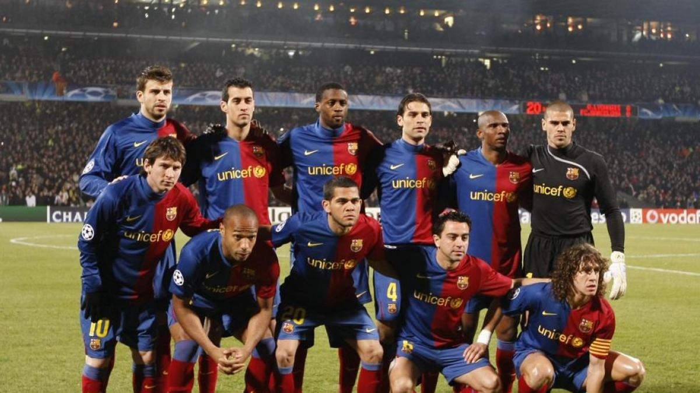
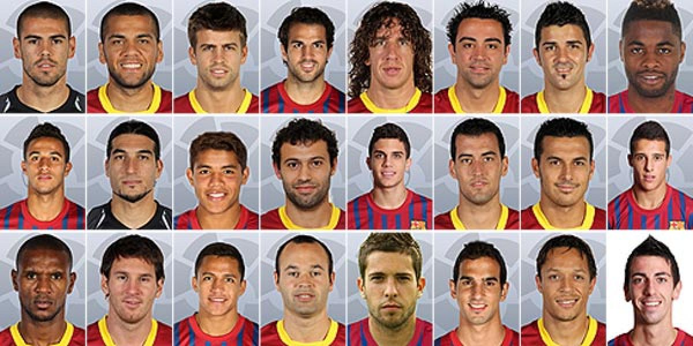
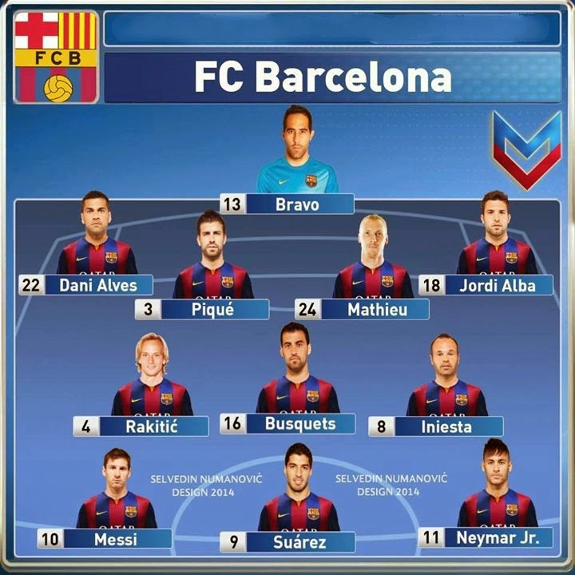

| años | trofros | equipo | imagen | video |
| 20009 | EL SEXTETE Primera División de España Copa del Rey Supercopa de España Liga de Campeones de la UEFA Supercopa de Europa Mundial de Clubes | La plantilla del Fútbol Club Barcelona en la temporada 2009-2010 incluía a los siguientes jugadores: Porteros: Víctor Valdés, José Pinto y Rubén Defensas: Daniel Alves, Gerard Piqué, Rafael Márquez, Carles Puyol, Gabriel Milito, Maxwell, Eric Abidal y D. Chygrynskiy Centrocampistas: Xavi Hernández, Andrés Iniesta, Seydou Keita, Sergio Busquets, Yaya Touré y Víctor Sánchez Delanteros: Zlatan Ibrahimović, Lionel Messi y Bojan Krkić El entrenador de aquel equipo era Pep Guardiola. |  | |
| 2012 | El Barcelona ganó la Liga por 22.ª vez. El Barcelona lideró la liga toda la temporada y acumuló 100 puntos. El Barcelona igualó el récord de puntos del Real Madrid de la temporada anterior. | Plantilla de la temporada 2012-13 ABIDALADRIANOALEXIS SÁNCHEZALVESARAUJOBAGNACKBALLIUBARTRASERGIOCESC FÀBREGASCUENCADEULOFEUESPINOSAFONTÀSGRIMALDOGUS LEDESILIEINIESTAJOAN ROMÁNJONATHAN DOS SANTOSJORDI ALBALOMBÁNLUIS ALBERTOMASCHERANOMASIPMESSIMONTOYAMUNIESAOIERPEDROPINTOPIQUÉPLANASPUYOLRAFINHASERGI GÓMEZSERGI ROBERTOSONGTELLOTHIAGOVALDÉSVILLAXAVI |  | |
| 2015 | Fútbol Club Barcelona Supercopa de España Subcampeón Supercopa de Europa Campeón Mundial de Clubes Campeón | Plantilla de latemporada 2015-16 ADRIANOALVESBARTRABRAVOSERGIODOUGLASGUMBAUINIESTAJORDI ALBAKAPTOUMMASCHERANOMASIPMATHIEUMESSIMUNIRNEYMARPEDROPIQUÉRAFINHARAKITICSAMPERSANDROSERGI ROBERTOSUÁREZTER STEGENCÁMARAVERMAELENAleix Vidal |  |
| goleadores del club | ||
|---|---|---|
| messi | suarez | |
| 672 | 198 | goles |
| 267 | 109 | asistencias |
este margen de estadisticas sobre futbolistas estan resguardados por estadisticas reales y paginas de recoleccion de datos
todo esto es mero fnatismo del barcelona
nada de esto es oficial de la fifa
gracias por ineterezarse por su club fav
ejemplo de familias de fuentes
vISCA BARCA VISCA CATALUÑA
vISCA BARCA VISCA CATALUÑA
vISCA BARCA VISCA CATALUÑA
vISCA BARCA VISCA CATALUÑA
vISCA BARCA VISCA CATALUÑA
vISCA BARCA VISCA CATALUÑA
vISCA BARCA VISCA CATALUÑA
vISCA BARCA VISCA CATALUÑA
vISCA BARCA VISCA CATALUÑA
vISCA BARCA VISCA CATALUÑA
vISCA BARCA VISCA CATALUÑA
esto es parte de un versiculo
de los fanes del barcelona y gente de cd barcelona
significa busca al barcelona y encontraras a catauña